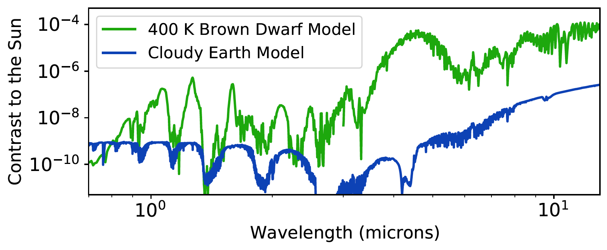

The 8 - 13 micron region of the infrared is important for directly imaging Earth-like planets around Solar type stars because the best contrast for a rocky body is achieved within this wavelength range. Important molecular gases can also be detected in this wavelength regime at very low resolutions. I am testing a 1024 by 1024 HgCdTe array with a wavelength cutoff of 12.8 microns for potential use in ground-based instruments that are focused on detecting and characterizing exoplanets. We have taken fast read out images with the detector at room temperature, ~90 K, and ~60K. Due to liquid helium shortages, I have not been able to order the cryogens required to reach temperatures where the detector best operates while at Santa Cruz.
The project used the former Keck Angle Tracker dewar. The previous filter wheel and mechanical turn were the only original internal parts kept in the dewar. The filter wheel slots were fitted with new holders and spacers to hold smaller, new filters and infrared blockers. A new L-brakcet shaped mount is used to hold a gold-coated, aluminum mirror that can pivot slightly around a ball. The current dewar window is a flat piece of fused silica and will eventually get replaced by a plano-convex ZnSe lens. The ultimate goal is to have a simple reimaging system that can capture images within two narrow bandpasses (2.3 and 5.3 microns) and two broad filters centered at 10.0 and 10.6 microns.
You can read the paper here.
Earth-like planets around Solar-like stars peak in contrast beyond 9 microns
A 1-to-1 imager was created to test our HgCdTe detector